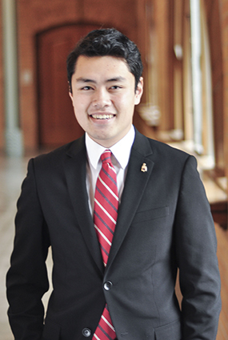
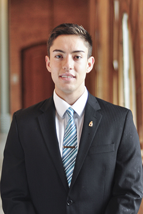
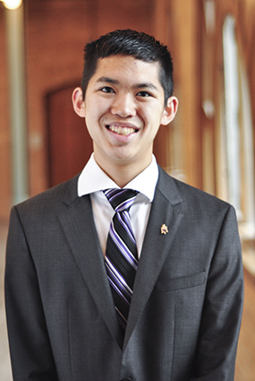
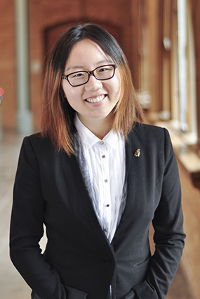
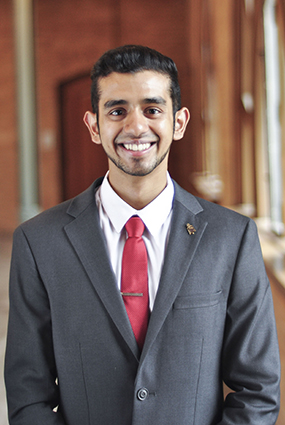
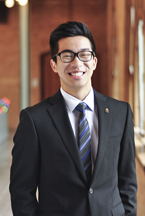

Executive Board
-

Kevin Phan
President
-

Aaron Corona
Vice President of
Public Relations -

Taylor Lee
Vice President of
Administration -

Kailin Li
Vice President of
Human Resources -

Rahul Rangnekar
Vice President of
Marketing -

Nicholas Chun
Vice President of
Finance -

Sean Yu
Vice President of
Professional Development